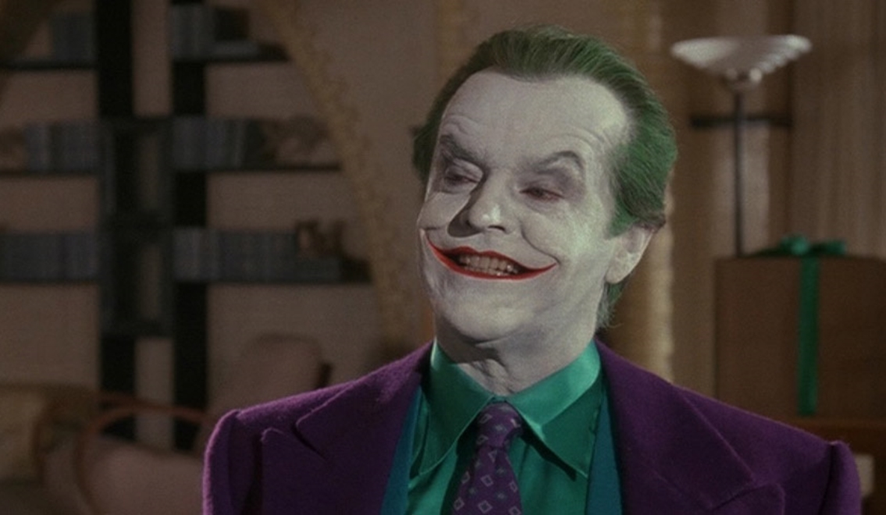
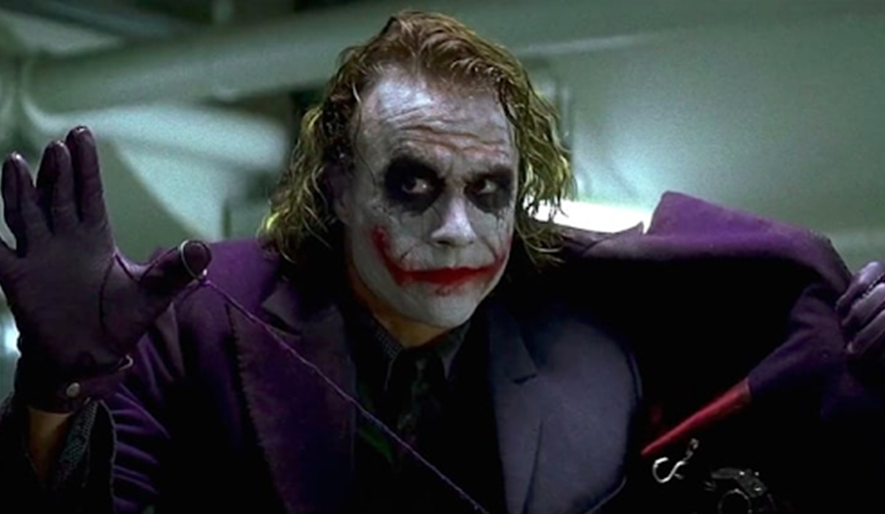
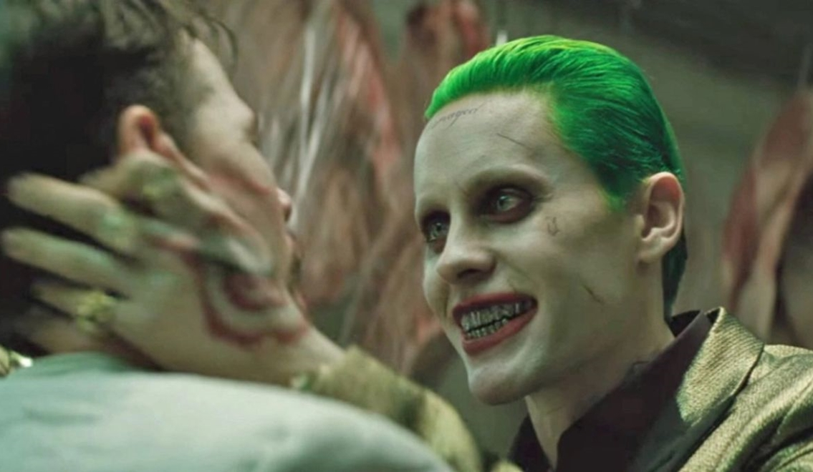

Joker: Cường Điệu Diễn Xuất Là Đỉnh Cao Của Method Acting?
Jack Nicholson, Heath Ledger, Jared Leto, Joaquin Phoenix… Không nhầm lẫn gì đâu, đây chính là những diễn viên từng đảm nhận vai Joker trong suốt hơn 30 năm qua.
Joker là một nhân vật có xuất phát điểm từ truyện tranh Batman, bí ẩn về nguồn gốc của hắn, sự điên cuồng táo bạo, độ tàn ác thông minh có lẽ là những điểm đã góp phần biến Joker trở thành gã ác nhân cực kỳ cuốn hút và thú vị. Có khá nhiều ý kiến cho rằng hắn không đơn thuần là kẻ ác, Joker là một vị đại sứ cao cấp hơn cả cái ác – đấy là LÝ TƯỞNG. Rõ ràng Joker có rất nhiều câu nói dày đặc tính triết lý và khi ngẫm kỹ hơn thì chúng ta đều gật gù đồng ý rằng gã nói CHỈ CÓ CHUẨN.

(Jack Nicholson)
Trong bộ phim Batman (1989), thành phố Gotham hiện lên khá sát với truyện tranh, một tác phẩm siêu anh hùng thuần túy với bối cảnh u tối ma mị mang phong cách thường thấy ở đạo diễn Tim Burton. Lần đầu tiên câu chuyện về Kỵ Sĩ Bóng Đêm được chuyển thể lên màn ảnh rộng và Batman do Michael Keaton đảm nhận đã gây ấn tượng tốt với người xem. Nhưng rồi mọi sự chú ý đều dồn về nhân vật Jack Napier. Nói đơn giản thì hắn là một tên tội phạm không may đã đụng độ Người Dơi và lại tiếp tục xui xẻo khi bị rơi vào thùng hóa chất. Điều may mắn duy nhất là hắn vẫn sống, chỉ có gương mặt hơi gặp “trục trặc”, có thể vì vậy mà hắn nổi điên rồi đổi tên thành Joker. Thật ra với diện mạo mới chính gã cũng hài lòng và thừa nhận qua câu thoại “As you can see i’m a lot happier”.
Thời điểm ấy Jack Nicholson đã là một tượng đài diễn xuất, Joker do ông hóa thân xuất sắc đến mức được xem như là một chuẩn mực. Vài ý kiến cho rằng Joker của Jack mang phong thái gần gũi với truyện tranh nhất, từ trang phục, điệu bộ, tiếng cười, mọi thứ gần như hoàn hảo. Tuýp nhân vật có thần kinh bất ổn và tâm lý kích động luôn là thế mạnh của ông. Từ McMurphy của One Flew Over The Cuckoo’s Nest cho đến Jack Torrance trong The Shining và cuối cùng là phiên bản nâng cấp như tổng hợp từ hai nhân vật trên: Joker.
Thật ra Jack đã có sẵn chất “điên” trong người, ông dường như chỉ việc khuếch đại nó lên nhiều lần hơn. Rõ ràng hơn khi diễn vai Hoàng Tử Tội Ác, đấy là một lợi thế hiện hữu vốn có.
Gần 20 năm sau, Joker lại khiến cả thế giới phải sửng sốt một lần nữa qua màn nhập vai ngoạn mục của cố diễn viên Heath Ledger. Khi The Dark Kight ra mắt tại các rạp chiếu phim, phần trình diễn của anh đã chính thức đập tan sự hoài nghi của tất cả, những người từng cho rằng vai diễn tưởng chừng là kinh điển của tiền bối Jack Nicholson giờ đây phải rút lại lời chê bai.

(Heath Ledger)
Áp dụng kỹ thuật Method Acting và chạm tới đỉnh cao khi khắc họa một Joker mang nét độc đáo riêng, Heath được tôn vinh như huyền thoại, một tượng đài Joker xuất chúng mà nhiều người cho rằng không ai có thể đánh bại.
Năm 2016, người hâm mộ của gã hề điên loạn lại có dịp được chứng kiến một phiên bản Joker mới. Lần này Jared Leto được kỳ vọng rất cao. Khi tạo hình của anh được công bố, hình ảnh Joker với hình xăm, bộ răng được bọc vàng, body vạm vỡ đã khiến nhiều người thích thú bởi sự mới mẻ đậm chất hiphop.
Tuy nhiên với những lùm xùm bên lề, thời lượng xuất hiện của Joker trong The Suicide Squad quá ít. Diễn xuất có phần hơi “gồng” và sáng tạo hơi quá mức đã biến Joker do Jared Leto thể hiện biến thành một gã tội phạm có phần thiếu chiều sâu, ủy mị sa đà vào tình cảm. Với khán giả đại chủng, Jared Leto là một diễn viên có tài, luôn hết mình với vai diễn, nhưng có lẽ Joker đã khiến Leto gặp vấn đề áp lực, dẫn đến những cái lắc đầu thất vọng khi phim công chiếu.

(Jared Leto)
Đến khi Joaquin Phoenix nhận lời tham gia vào Joker (2019) – phim riêng về ác nhân khét tiếng của DC Comics, một hình tượng Joker mới hoàn toàn, nhận được nhiều lời khen từ phía khán giả lẫn giới phê bình.
Rất dễ dàng bắt gặp sự so sánh giữa các phiên bản Joker, từ hay nhất đến dở nhất. Khi The Dark Knight ra mắt, gần như mọi sự quan tâm và ngưỡng mộ đều dành cho Heath Ledger, một tên tội phạm tinh quái, một kẻ ác có tư duy thông minh vượt trội và là “thần tượng” của những tín đồ tôn sùng “Lý Tưởng Joker”.
Dùng từ “Lý Tưởng Joker” bởi vì từ bao lâu nay vốn dĩ quan niệm về đạo đức, nhân cách, mặt trái, lẽ phải, về cuộc đời và sự phản ứng tương quan giữa nhân loại luôn nằm trong những thông điệp ngông cuồng của Joker.
Các câu nói thoáng nghe có thể thấy vô cùng tàn nhẫn và cực đoan nhưng sự thật rằng nó luôn có phần đúng. Điều đáng sợ nằm ở chỗ những lời thoại tưởng chừng vô thưởng vô phạt nhưng lại có sức ảnh hưởng theo hướng truyền cảm hứng, khiến cho người tốt nghe xong phải tự chất vấn lương tâm còn kẻ xấu tiếp thu và phát tán nó thành hành động nổi loạn.
“Lý tưởng Joker” vốn đã tồn tại sẵn trong truyện tranh hay sau khi được chuyển thể thành phim thì mới có?
Dù thế nào bản chất của vấn đề cũng đều giống nhau ở chỗ đấy là một sự cường điệu rõ hơn về những mặt tối của xã hội, cụ thể hơn là những con người ngoài kia luôn phân cực những suy nghĩ của bản thân ở hai trạng thái: tiêu cực – tích cực.
Chính bởi vốn dĩ xuất phát điểm từ một nhân vật phản diện trong truyện tranh nên điều làm nên sự đặc sắc nhất của việc chuyển thể từ truyện sang phim chính là khả năng nhập vai của người diễn viên.
Nhiều ý kiến cho rằng Joaquin Phoenix diễn quá cường điệu, căn bệnh cười không kiểm soát cũng quá cường điệu, xây dựng nhân vật quá chán…
(Joaquin Phoenix)
Thiết nghĩ với một kẻ có nguồn gốc không rõ ràng thì sao không để điện ảnh được tự do bước đi trên cuộc đời của hắn thông qua nhiều câu chuyện khác nhau. Dù dở dù hay thì mỗi cá nhân sẽ có một cảm nhận khác nhau, không thể đánh giá được. Vì “Lý Tưởng Joker” là một thứ vô hình, và trách nhiệm truyền đạt nó trở nên hữu hình, đòi hỏi người diễn viên phải biến hóa để phù hợp với điều đó.
Tuýp nhân vật như Joker nếu chỉ đơn giản dùng Method Acting thì liệu mấy ai sẽ đảm bảo được rằng có thể phân biệt đâu là tội phạm bình thường của điện ảnh, đâu là Joker.
Có thể thấy mỗi khi vào vai tên hề tội phạm, người diễn viên đã hóa thân để hòa mình vào nhân vật ở một mức độ cao hơn, họ bắt buộc phải cường điệu hóa diễn xuất. Bởi bản chất tính cách của Joker là hiện thân của sự cường điệu về tối tối của ác quỷ bên trong con người. Chính điều này mới là đặc sản góp phần làm nên cá tính độc nhất vô nhị của hắn.
Method Acting là đắm mình vào nhân vật và đem lại cảm giác thật nhất, có hồn nhất cho nhân vật, nhưng đôi khi có một vài vai diễn ngoài việc nhập vai thì sự over làm quá diễn xuất lên lại là điều cần thiết. Lúc này Method Acting tiến hóa thành Over – Method Acting, một đỉnh cao mới trong nghệ thuật diễn xuất. Người diễn viên cần “cường điệu” chính cách diễn của mình để thông điệp của nhân vật trở nên ‘thật” hơn, điều này làm nên sự khác biệt giữa bác sĩ ăn thịt người Hannibal Lecter và những tên sát nhân khát máu giết người vì mục đích nào đó. Cũng từ đấy khán giả mới cảm nhận rõ Joker có điểm gì khác so với đầy rẫy tên khủng bố tàn bạo mà Hollywood sản sinh.
Jack Nicholson cường điệu và tạo cảm giác đấy là một Joker chuẩn comic, Heath Ledger cũng cường điệu thông qua giọng cười, thói quen liếm môi, những màn đối thoại với chất giọng không hề bình thường cùng thái độ vốn dĩ cũng có sự cường điệu để tạo thành một Joker huyền thoại trong lòng người hâm mộ. Người xem cho rằng anh diễn không hề gồng và rất tự nhiên, nhưng nếu anh không cường điệu thì rõ ràng sự thông minh trong cái điên của Joker cũng không khác gì tên tội phạm Virus gắn liền với John Malkovich trong Con Air (1997).
Nhân vật Joker bản chất đã là một sự xây dựng cường điệu với danh hiệu Hoàng Tử Tội Phạm, thế nên nếu có thông điệp thì ‘Lý Tưởng Joker” cũng cần được cường điệu và lối diễn của Heath Ledger chính là một màn Over-Method Acting. Không khó để nhận ra sự “over” ấy khi xem phim. Thế nên Joaquin Phoenix dẫu cho có “làm quá” trong diễn xuất, trong nụ cười, trong điệu nhảy, thì đấy là một điều cần thiết, nên làm, nếu không làm thì có khi lại biến Joker thành một dạng tội phạm nửa mùa theo kiểu ăn cơm với thịt kho trứng bằng bộ mặt căng thẳng “tỏ ra nguy hiểm” .
Tựu chung lại cả Jack Nicholson, Heath Ledger lẫn Joaquin Phoenix đều xuất sắc. Joker do ba nam tài tử thể hiện đều có tính chất khác nhau. Cơ bản thì đấy vẫn là Joker nhưng lại mang ba màu sắc khác nhau, phong thái khác nhau hoàn toàn, không thể nói rằng ai diễn tự nhiên hơn bởi suy cho cùng họ đều cần sự “cường điệu” để đem đến trải nghiệm lý thú “chân thật” nhất cho người xem. Càng không thể nhận xét ai đóng hay hơn, vì họ đều xuất sắc trong thế giới Joker của mỗi cá nhân trong những thước phim hay.